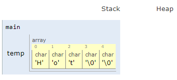

Introducción al lenguaje C
Contents
Introducción al lenguaje C#
Objetivos
Conocer las generalidades del lenguaje de programación C.
Conocer la estructura de un programa en C.
Introducir el uso de las funciones y establecer cómo se realiza el paso de parámetros a funciones.
1. Formato típico de un programa en C#
En su forma más básica un programa en C tiene la siguiente estructura:
/** Directivas del preprocesador */
// Librerías
#include <libreriaSistema>
#include "libreriaUsuario"
// Macros y constantes con define
#define CTE VALOR_CTE
/* Variables globales*/
tipo1 varG1_1, varG2_1, ...;
tipo2 varG1_2, varG2_2, ...;
...
/* Función principal (Primera en ser llamada)*/
int main(int argc, char *argv[]) {
/** Variables locales */
tipo1 varL1_1, varL2_1, ...;
tipo2 varL1_2, varL2_2, ...;
...
/** Instrucciones */
...
código
...
return 0;
}
Como se puede notar, la forma es similar a la que se emplea en cualquier otro lenguaje. A continuación se muestra, con un breve ejemplo un caso de aplicación de la plantilla anterior.
Ejemplos#
Hacer un programa que despliegue Hello world en pantalla:
Empleando java.
Empleando C.
Solución:
Empleando java: a continuación se muestra el código solución (ex1_ch2_S01.java) en java (simulación):
public class Hello { public static void main(String[] args) { System.out.println("Hello world"); } }
Empleando C: en el enlace solución en C se encuentra el código C (ex1_ch2_S01.c) que implementa lo solicitado (simulación):
#include <stdio.h> int main(int argc, char *argv[]) { printf("%s","Hello, World"); return 0; }
A modo de repaso, se muestran los comandos empleados para compilar y ejecutar el programa en C:
$ gcc -Wall ex1_ch2_S01.c -o hello.out $ ls hello.c hello.out $ ./hello.out Hello, World
2. Tipos de Datos#
Los tipos de datos básicos incorporados en C son los enteros, los reales y los tipo carácter. En la siguiente tabla se resumen éstos:
Tabla 1 Tipos de datos primitivos en C
Tipo de dato |
Tamaño (en bytes) |
Rango |
Especificador de formato |
|---|---|---|---|
|
2 |
-32768 to 32767 |
|
|
2 |
0 to 65535 |
|
|
4 |
0 to 4294967295 |
|
|
4 |
2147483648 to 2147483647 |
|
|
4 |
2147483648 to 2147483647 |
|
|
4 |
0 to 4294967295 |
|
|
8 |
-(2^63) to (2^63)-1 |
|
|
8 |
0 to 18446744073709551615 |
|
|
1 |
-128 to 127 |
|
|
1 |
0 to 255 |
|
|
4 |
|
|
|
8 |
|
|
|
12 |
|
El manejo de los tipos de datos en C es muy similar al que se hace en java. Cabe resaltar que de los tipos de datos enteros, el tipo char se utiliza para representar caracteres de modo que las constantes tipo char pueden ser:
Caracteres encerrados entre comillas (
'A','b','p') asociados a un valor ascii.Caracteres no imprimibles (tabulación, avance de página) los cuales se representan con secuencias de escape (
'\n','\t'). La siguiente tabla muestra algunos de estos caracteres:
Tabla 2 Secuencias de escape en C
Carácter de escape |
Singnificado |
Código ASCII |
|---|---|---|
|
Carácter de alerta (timbre) |
|
|
Retroceso de espacio |
|
|
Avance de página |
|
|
Nueva línea |
|
|
Retorno de carro |
|
|
Tabulación horizontal |
|
|
Tabulación vertical |
|
|
Backslash ( |
|
|
Interrogación ( |
|
|
Comilla sencilla ( |
|
|
Comillas dobles. |
|
|
Número octal. |
|
|
Número hexadecimal |
|
|
Carácter nulo o terminación de cadena |
La equivalencia entre un carácter específico y su valor ascii se puede encontrar en una tabla ascii como la mostrada en el siguiente enlace.
2.1. Variables#
Una declaración indica el tipo de variable y le sirve al compilador para determinar la cantidad de memoria requerida para almacenar la variable deseada. El formato básico para declarar una variable es:
tipo var1, var2, ...;
Si la declaración produce también un almacenamiento (inicialización), entonces es una definición.
tipo var = valor inicial;
Note
Todas las variables en C se declaran o definen antes de ser utilizadas, de lo contrario el compilador arrojará un error de variable no declarada.
En esta sección se hace referencia sólo a las variables primitivas (
char,int,float,double, et.), cuando las variables son compuestas (arrays, cadenas de caracteres, matrices, …) la inicializacion es diferente (este tema será abordado más adelante en el curso).
Ejemplos#
A continuación se muestran varias declaraciones de variables, note que la forma es similar a la empleada en java:
int i, j, k; float length, height; char midinit; float total = 16.78; int a = 1, b = 2; char ac = '@'; const IVA = 19
En el siguiente enlace puede hacer la simulacion del código anterior (note que las variables no inicializadas no aparecen desplegadas).
Important
La palabra reservada
const(finalen el caso de java) permite definir determinadas variables con valores constantes que no se pueden modificar.
2.2. Cadenas de caracteres#
En C una cadena de caracteres (C String) no es un tipo de dato primitivo. En C se requiere usar un arreglo de caracteres (datos primitivos tipo char) cada vez que se requiera utilizar un String. Existen varias formas de declarar cadenas de caracteres:
Indicando el máximo número de carácteres en la definición:
char nombreCadena[TAM];
Inicializando la cadena de carácteres de modo que el compilador pueda deducir su tamaño:
char nombreCadena[] = "Contenido_de_la_cadena";
Definiendo el tamaño e inicializando:
char nombreCadena[TAM] = "Contenido_de_la_cadena";
En una cadena de carácteres el último carácter útil es el carácter NULL (\0). El cual se incluye de manera automática para marcar el final de la cadena.
Ejemplos#
Declarar una cadena llamada temp de 5 bytes cuyo contenido inicial sea Hot:
char temp[5] = "Hot";
El resultado en memoria puede ser visto en el siguiente enlace

Es importante resaltar que el programador debe asegurarse que la cadena de caracteres sea lo bastante grande para el uso deseado. Vemos que
tempmantiene 4 caracteres, 3 de la palabraHotmás el carácterNULL(\0).Se tienen la siguientes declaraciones (simulación):
#include <stdio.h> int main() { char s1[6]; char s2[5] = "Hola"; char s3[] = "zzz"; return 0; }
Responda las siguientes preguntas:
¿Cuál es el tamaño de cada una de las cadenas?
¿Cuál es el contenido almacenado en cada una?
3. Entrada y salida estándar#
En C la entrada y salida de texto se abstrae como streams o flujos de caracteres, no importa de dónde se origine el flujo o hacia a donde se dirija. Un flujo de texto, es una secuencia de caracteres dividida en líneas en la cual cada línea consiste de cero o más caracteres seguidos por un carácter de nueva línea.
En C las funciones de E/S y las estructuras de datos usadas por esas funciones se encuentran declaradas en el archivo de cabecera <stdio.h>. Para el correcto funcionamiento del código es necesario incluir dicho archivo mediante la directiva del preprocesador #include, pues en caso contrario, puede funcionar de forma incorrecta, e incluso, puede llegar a dar errores de compilación.
La biblioteca stdio.h provee un conjunto de funciones para leer y escribir desde la consola. A continuación veremos algunas:
Funcion printf#
La forma de la función se muestra a continuacion:
int printf(const char *format[,argumento,...]);
La función printf() se usa para escribir cualquier tipo de dato a la consola. Se conoce como salida formateada pues convierte, formatea, e imprime sus argumentos (arg1, arg2, ...) en la salida estándar. Para ello toma el formato establecido por el usuario en el argumento format (ver en la tabla 1 la columna especificador de formato asociada a cada tipo de dato).
Para informacion adicional puede consultar el siguiente enlace
Por ejemplo suponiendo que se tiene el siguiente fragmento de código en C:
printf("Color %s, Number %d, Float %5.2f\n", "red", 12345, 3.14);
La salida en pantalla será:
Color red, Number 12345, Float 3.14
Observe el siguiente codigo para comprender lo anterior (simulación):
#include <stdio.h>
int main() {
printf("Color %s, Number %d, Float %5.2f\n", "red", 12345, 3.14);
return 0;
}
Notará que la parte asociada a especificador de formato (parte precedida por % en el primer argumento de la función printf) se reemplaza por el respectivo valor asociado a la variable o constante. Como recordatorio, presentamos en la siguiente tabla los especificadores de formato más comunes:
Tabla 3 Especificadores de formato más comunes en C
Especificador de formato |
Tipo de dato |
|---|---|
|
|
|
|
|
|
|
|
|
|
|
|
|
|
|
|
|
|
Ejemplo
Dado el siguiente fragmento de código (simulación). ¿Cual es su salida en pantalla?
#include <stdio.h>
int main() {
printf("ABC");
printf("\n");
printf("---\n");
printf("%d\n",5);
printf("---\n");
printf("%c %c %c\n",'A','B','C');
printf("---\n");
printf("From sea ");
printf("to shining ");
printf("C\n");
printf("---\n");
float leg1 = 200.3, leg2 = 357.4;
printf("If was %f miles\n", leg1 + leg2);
printf("---\n");
int num1 = 10, num2 = 33;
printf("%d\t%d\n", num1, num2);
printf("---\n");
float big = 11e+23;
printf("%e\n", big);
printf("---\n");
printf("%c\n",'?');
printf("%d\n",'?');
printf("---\n");
return 0;
}
El comportamiendo del especificador dependerá del tipo de dato tal y como se resume en las siguiente tablas segun el tipo de dato a imprimir.
Caso 1 - Datos enteros y caracter#
Tabla 4 Usando especificadores para datos tipo char e int
Especificador de formato |
Tipo de dato |
|---|---|
|
|
|
|
La salida formateada permite un mayor control de la apariencia de la salida en pantalla, ya que es posible controlar que tantas columnas serán usadas a la salida del contenido de una variable particular al especificar el ancho del campo.
En lo que respecta a la alineación y para todos los casos cuando el símbolo es un menos (-) la alineación será a la izquierda, por otro lado si no hay símbolo, la alineación será a la derecha. Tambien, si se desea colocar ceros en vez de espacios, se debe colocar un cero (0) antes del campo ancho ancho. Por ejemplo: %04d.
Ejemplo
Dado el siguiente fragmento de código (simulación). ¿Cual es su salida en pantalla?
#include <stdio.h>
int main() {
char lett='w';
int i=1,j=29;
printf ("%c\n",lett);
printf ("%4c\n",lett);
printf ("%-3c\n\n",lett);
printf ("%d\n",i);
printf ("%d\n",j);
printf ("%10d\n",j);
printf ("%010d\n",j);
printf ("%-010d\n",j);
printf ("%2o\n",j);
printf ("%2x\n",j);
return 0;
}
Caso 2 - Datos reales#
Tabla 5 Usando especificadores para datos tipo float (también aplica a los demas tipos de datos reales)
Especificador de formato |
Tipo de dato |
Ejemplo |
Resultado |
|---|---|---|---|
|
|
|
|
|
|
|
|
Ejemplo
Dado el siguiente fragmento de código (simulación). ¿Cual es su salida en pantalla?
Caso 3 - Cadenas de caracteres#
Tabla 6 Usando especificadores para cadenas de caracteres
Especificador de formato |
Tipo de dato |
Ejemplo |
Resultado |
|---|---|---|---|
|
|
|
|
Ejemplo
Dado el siguiente fragmento de código. ¿Cual es su salida en pantalla?
#include <stdio.h>
int main() {
char s[]="an evil presence";
printf("%s\n",s);
printf("%7s\n",s);
printf("%20s\n",s);
printf("%-20s\n",s);
printf("%.5s\n",s);
printf("%.12s\n",s);
printf("%15.12s\n",s);
printf("%-15.12s\n",s);
printf("%3.12s\n",s);
return 0;
}
Funcion scanf#
La forma de la función se muestra a continuacion:
int scanf(const char *format[,arg1,arg2...]);
La función scanf() se usa para leer cualquier tipo de dato predefinido desde el teclado, y convertirlo de forma automática al formato interno adecuado.
Esta funcion lee caracteres desde el flujo de entrada estándar, los interpreta según lo especificado en format, y los almacena en los argumentos. Cada argumento debe ser la dirección de la variable donde será almacenado el carácter. Retorna el número de ítems (argumentos) de entrada emparejados con éxito (almacenados). Los identificadores de formato para scanf son los mismos que para printf (ver tabla 3).
Important
Cuando el tipo de dato asociado a la variable es simple (char, int, etc); se antepone el símbolo apersand (&) a la variable, pues con este símbolo se obtiene la dirección en memoria de la variable (esto será explicado más adelante en el curso), por ejemplo en el siguiente código:
#include <stdio.h>
int main() {
int edad;
float estatura;
printf("Digite la edad: ");
scanf("%d", &edad);
printf("Digite la estatura (en metros): ");
scanf("%f", &estatura);
printf("\n------------------------------------------\n");
printf("Edad: %d\n",edad);
printf("Estatura %f\n",estatura);
return 0;
}
En el código anterior el ampersand (&) es usado antepuesto a las variables edad y estatura cuando se emplea la funcion scanf. El programa anterior cuando se ejecuta arroja una salida como la siguiente (para nuestro caso asumimos una edad de 3 años y una estatura de 0.8 m).
Digite la edad: 3
Digite la estatura (en metros): 0.8
------------------------------------------
Edad: 3
Estatura 0.800000
Important
Cuando lo que se ingresa es una cadena de caracteres, no es necesario emplear el ampersand (&) pues en C el nombre de una cadena de caracteres se interpreta como una dirección de memoria.
El siguiente código muestra lo descrito anteriormente:
#include <stdio.h>
int main() {
char nombre[15]; // Almacena maximo 14 caracteres
printf("Digite el nombre: ");
scanf("%s",nombre);
printf("\nHola: %s\n",nombre);
return 0;
}
Note como en este código no se emplea el ampersand cuando se lee la cadena nombre con el scanf (a diferentecia de las variables edad y estatura del ejemplo anterior). La salida del programa anterior se muestra a continuacion:
Digite el nombre: Ramon
Hola: Ramon
Jupyter Book also lets you write text-based notebooks using MyST Markdown. See the Notebooks with MyST Markdown documentation for more detailed instructions. This page shows off a notebook written in MyST Markdown.
4. Estructuras de Control de flujo#
Las estructuras de control en C son similares a las de Java. A continuación, se describe la estructura de cada una y se muestan algunos ejemplos.
4.1 Estructura condicional#
4.1.1. Estructura if/else if/else#
La forma de esta estructura se muestra a continuación:
if(condicion1) {
instrucciones_condicion_1_verdadero;
...
}
else if(condicion2) {
instrucciones_condicion_2_verdadero;
...
}
...
else if(condicion_N) {
instrucciones_condicion_N_verdadero:
...
}
else {
instrucciones_caso_falso;
...
}
Ejemplo
Se tiene la siguiente tabla en la cual se muestra el equivalente entre números y letras para la calificación de notas en una guardería. Realizar un algoritmo en C que tomando como base dicha tabla y como entrada las notas, imprima la nota en letras correspondiente.
Rango |
Nota |
|---|---|
nota >= 4.5 |
E |
4.0 <= nota < 4.5 |
B+ |
3.5 <= nota < 4.0 |
B |
3.0 <= nota < 3.5 |
B- |
nota < 3 |
I |
Una muestra de la salida del programa se muestra a continuación:
Introduzca la nota que saco el pelao: 3.2
La nota es: -B
A continuación se muestra el código de la solución:
#include <stdio.h>
int main() {
float nota;
printf("Introduzca la nota que saco el pelao: ");
scanf("%f",¬a);
/* Implementacion con if anidados */
if(nota >= 4.5) {
// nota >= 4.5 --> E
printf("La nota es: E\n");
}
else if(nota >= 4.0) {
// nota < 4.5 y nota >= 4.0 --> 4 <= nota < 4.5 --> B+
printf("La nota es: B+\n");
}
else if(nota >= 3.5) {
// nota < 4.0 y nota >= 3.5 --> 3.5 <= nota < 4 --> B
printf("La nota es: B\n");
}
else if(nota >= 3.0) {
// nota < 3.5 y nota >= 3.0 --> 3.0 <= nota < 3.5 --> B-
printf("La nota es: B-\n");
}
else {
// nota < 3.0
printf("La nota es: I\n");
}
return 0;
}
A continuacion se muestran dos casos de ejecución y sus respectivas salidas para el programa anterior:
Introduciendo una nota de 3.6:
Introduzca la nota que saco el pelao: 3.6 La nota es: B
Introducciendo una nota de 4.8:
Introduzca la nota que saco el pelao: 4.8 La nota es: E
4.1.2. Estructura switch#
La sintaxis de esta estructura se muestra a continuación:
switch(selector) {
case valor_1:
instrucciones_1;
...
<break;>
case valor_2:
instrucciones_2;
...
<break;>
case valor_N:
instrucciones_N;
...
<break;>
default:
instrucciones_default;
...
}
Ejemplo
En la siguiente tabla se muestran las categorías a las que pertenecen los signos del zodíaco:
Signo |
Tipo |
|---|---|
Aries |
Fuego |
Tauro |
Tierra |
Géminis |
Agua |
Cáncer |
Aire |
Leo |
Fuego |
Virgo |
Tierra |
Libra |
Aire |
Escorpio |
Agua |
Sagitario |
Fuego |
Capricornio |
Tierra |
Acuario |
Aire |
Piscis |
Agua |
Ejemplo
Se quiere escribir un programa en C que:
Muestre el listado de los signos del zodiaco.
Pida por teclado un número (dato entero) asociado a un signo del zodiaco.
Muestre la categoría a la que pertenece el signo del zodiaco seleccionado.
Nota: Si el número introducido por el usuario, no está asociado a ningún signo del zodiaco, se mostrará
el mensaje: “ERROR:
A continuación se muestra el código de la solución:
#include <stdio.h>
#define ARIES 1
#define TAURO 2
#define GEMINIS 3
#define CANCER 4
#define LEO 5
#define VIRGO 6
#define LIBRA 7
#define ESCORPIO 8
#define SAGITARIO 9
#define CAPRICORNIO 10
#define ACUARIO 11
#define PISCIS 12
int main() {
int signo;
printf("SIGNOS DEL ZODIACO\n");
printf("1. Aries\n");
printf("2. Tauro\n");
printf("3. Géminis\n");
printf("4. Cáncer\n");
printf("5. Leo\n");
printf("6. Virgo\n");
printf("7. Libra\n");
printf("8. Escorpio\n");
printf("9. Sagitario\n");
printf("10. Capricornio\n");
printf("11. Acuario\n");
printf("12. Piscis\n\n");
printf("Seleccione el signo del zodiaco de su preferencia: ");
scanf("%d",&signo);
switch(signo) {
case ARIES:
case LEO:
case SAGITARIO:
printf("Su signo es categoria fuego\n");
break;
case TAURO:
case VIRGO:
case CAPRICORNIO:
printf("Su signo es categoria tierra\n");
break;
case GEMINIS:
case ESCORPIO:
case PISCIS:
printf("Su signo es categoria agua\n");
break;
case CANCER:
case LIBRA:
case ACUARIO:
printf("Su signo es categoria aire\n");
break;
default:
printf("\"ERROR\": no está asociado a ningún signo\n");
}
return 0;
}
A continuación se muestra un caso de test cuando el usuario ingresa un número no válido para un signo:
SIGNOS DEL ZODIACO
1. Aries
2. Tauro
3. Géminis
4. Cáncer
5. Leo
6. Virgo
7. Libra
8. Escorpio
9. Sagitario
10. Capricornio
11. Acuario
12. Piscis
Seleccione el signo del zodiaco de su preferencia: 13
"ERROR": no está asociado a ningún signo
4.2 Estructura repetitiva#
4.2.1. Estructura for#
La forma de esta estructura se muestra a continuación:
for(expresion_inicializacion; expresion_test; expression_modificacion){
instrucciones;
...
}
Ejemplo
Escriba un programa que sume una secuencia de enteros. Suponga que el primer entero que se lee especifica el número de valores que faltan por introducir. Su programa deberá leer un solo valor por instrucción de entrada. Una secuencia de entrada típica podría ser:
5 100 200 300 400 500
Donde 5 indica que deben sumarse los siguientes 5 valores.
El código del programa se muestra a continuacion:
#include <stdio.h>
int main() {
int N; // Cantidad de numeros
int num; // Numero a leer
int i; // i-esimo numero
int sum = 0; // Suma de los numeros
printf("Ingrese la cantidad de numeros a sumar: ");
scanf("%d",&N);
for(i = 0; i < N; i++) {
scanf("%d",&num);
sum += num;
}
printf("\nLa suma es: %d\n",sum);
return 0;
}
A continuación se muestra un caso de ejecución del programa anterior:
Ingrese la cantidad de numeros a sumar: 3
123 3 3
La suma es: 129
Note
Para el caso, la función scanf toma el espacio como un enter.
A continuación, se muestra la salida del programa (para ambos casos):
Usando enter como delimitador:
Ingrese la cantidad de numeros a sumar: 3 123 3 3 La suma es: 129
Usando espacio y como delimitador enter al final:
Ingrese la cantidad de numeros a sumar: 3 123 3 3 La suma es: 129
4.2.2. Estructura while#
La forma de esta estructura se muestra a continuación:
while(condicion_control){
instrucciones;
...
}
Ejemplo
Escriba un programa que calcule e imprima el promedio de varios enteros posivos. Suponga que el último valor leído es el centinela 9999. Una secuencia típica de entrada sería:
10 8 11 7 9 9999
Que indica que el promedio de todos los valores que preceden a 9999 se va a calcular. (Pista: Hacer esto con un ciclo while dentro del cual se lean los valores a promediar, siempre y cuando la condición de que lo leído no sea 9999, se cumpla).
La solución se muestra a continuación:
#include <stdio.h>
const unsigned CENTINELA = 9999;
int main() {
int num; // Numero a leer
int sum = 0; // Suma de los numeros
scanf("%u",&num);
while(num != CENTINELA) {
sum += num;
scanf("%d",&num);
}
printf("\nLa suma es: %d\n", sum);
return 0;
}
Ingresando los valores 10, 8, 11, 7 y 9 se obtiene 45 como resultado de la suma, veamos el programa en acción para este caso:
10 8 11 7 9 9999
La suma es: 45
4.2.3. Estructura do-while#
La forma de esta estructura se muestra a continuación:
do {
instrucciones;
...
} while(condicion_control);
Ejemplo
Hacer un programa que solicite un número de tal manera que si este es negativo mostrara un mensaje que diga "Número negativo asi que suerte", y si es positivo mostrará un mensaje que diga: "Número positivo, siga usted" y solicite nuevamente un número.
La solución se muestra a continuación:
#include <stdio.h>
int num; // Numero a leer
int main() {
do {
scanf("%d",&num);
if(num >= 0) {
printf("Numero positivo, siga usted\n");
}
else {
printf("Numero negativo asi que suerte\n");
}
} while(num >= 0);
printf("\nFin del programa\n");
return 0;
}
A continuación se muestra una salida típica al ejecutar el anterior programa:
1
Numero positivo, siga usted
2
Numero positivo, siga usted
3
Numero positivo, siga usted
0
Numero positivo, siga usted
-7
Numero negativo asi que suerte
Fin del programa
5. Funciones#
Ademas de las funciones de librerias (como scanf y prinf) en C es posible crear funciones definidas por el usuario haciendo que los programas sean modulares. Una funcion en C es un pequeño sub-programa que lleva a cabo una tarea particular. La forma de trabajar con funciones en C sigue la misma filosofia que la empleada en los metodos en java. Para usar funciones el programador debe hacer tres cosas:
Definir la función.
Declarar la función.
Usar la función.
A continuación se detalla cada aspecto de los anteriormente mencionados.
1. Definición de la función
Consiste en las instrucciones que implementan lo que hace la función. La definición de una función tiene la siguiente sintaxis:
return_type function_name (data type variable name list) {
local declarations;
function statements;
}
Ejemplo: Hacer una función que calcule el factorial de un número:
int factorial (int n) {
int i,product=1;
for (i=2; i<=n; ++i) {
product *= i;
}
return product;
}
2. Declaración de la función
La declaración de una función está asociada a la cabecera de la funcion. El código de la declaración debe ubicarse antes de que la función sea definida. También se conocen como prototipos de la función y no son más que la cabecera de la función. La forma es la siguiente.
return_type function_name (data type variable name list);
Ejemplo: ¿Cual es el prototipo de la función factorial del ejemplo anterior?
int factorial (int n);
3. Uso de la función
Consiste en invocar la funcion; lo cual consiste en colocar el nombre de la función proporsionando los argumentos y variables para almacenar valores retornados (en caso de ser necesario).
Ejemplo: Calcular el factorial de 8 llevando el resultado a una variable llamada f
int f;
f = factorial(8);
Ejemplo: Calcular el factorial de un número ingresado por el usuario:
int num, f;
printf("Ingrese el numero");
scanf("%d",&num);
f = factorial(num);
printf("%d! = %d\n", num, f);
Ejemplos
(paso a paso) Los ejemplos anteriormente mostrados solo hacian énfasis en las partes de las funciones. Para usar una funcion es necesario unir los aspectos anteriormente mencionados a la hora de codificar el archivo fuente, vamos a ver varios ejemplos para tal fin. Veamos como se haria gradualmente el proceso de una función que calcula la serie fibonacci teniendo en cuenta lo anterior. Asumiendo que el archivo fuente se llame
fibonacci.cy tenga el siguiente contenido (es decir esta vacio):#include <stdio.h> /* Funcion main */ int main() { // coloque aqui su codigo... return 0; }
Vamos a proceder a realizar las siguientes tareas:
Paso 1: Codificar la declaración y definición de la función:
#include <stdio.h> /* Declaración de la funcion */ int fibonacci(int n); // int fibonacci(int); /* Funcion main */ int main() { // coloque aqui su codigo... return 0; } /* Definición de la funcion */ int fibonacci(int n) { if(n == 0) { return 0; } else if(n == 1) { return 1; } else { return fibonacci(n - 1) + fibonacci(n - 2); } }
Paso 2: Una vez que tiene la función codificada lleve a cabo casos de test para verificar que la lógica de esta sea correcta.
Caso
nfibonacci(n)1
0
0
2
1
1
3
6
8
A continuación se muestra la función (con su respectiva invocación) de test que lleva a cabo estos casos de prueba (simulación):
#include <stdio.h> /* Declaración de la funcion */ void test(void); int fibonacci(int n); // int fibonacci(int); /* Funcion main */ int main() { // coloque aqui su codigo... test(); return 0; } /* Definición de la funcion */ void test(void) { int n = 0; int fib; fib = fibonacci(n); printf("-> Caso 1: n = 0 - fibonacci(0) = %d\n", fib); n++; printf("-> Caso 2: n = %d - fibonacci(%d) = %d\n", n, n, fibonacci(n)); printf("-> Caso 3: n = %d - fibonacci(%d) = %d\n", 6, 6, fibonacci(6)); } int fibonacci(int n) { if(n == 0) { return 0; } else if(n == 1) { return 1; } else { return fibonacci(n - 1) + fibonacci(n - 2); } }
Paso 3: una vez verificado el correcto funcionamiento de la función, el siguiente paso consiste en adaptar el codigo necesario para hacer que el programa interactue con el usuario empleando esta función.
#include <stdio.h> /* Declaración de la funcion */ void test(void); int fibonacci(int n); // int fibonacci(int); /* Funcion main */ int main() { // coloque aqui su codigo... //test(); int numTerm, fib; printf("-----------------------\n"); printf("PROGRAMA FIBONACCI\n"); printf("-----------------------\n"); printf("Digite el numero de termino al que le desea calcular la serie fibonacci: "); scanf("%d",&numTerm); if(numTerm < 0) { printf("El numero de terminos debe ser positivo\n"); } else { fib = fibonacci(numTerm); printf("fibonacci(%d) = %d\n", numTerm,fib); } return 0; } /* Definición de la funcion */ void test(void) { int n = 0; int fib; fib = fibonacci(n); printf("-> Caso 1: n = 0 - fibonacci(0) = %d\n", fib); n++; printf("-> Caso 2: n = %d - fibonacci(%d) = %d\n", n, n, fibonacci(n)); printf("-> Caso 3: n = %d - fibonacci(%d) = %d\n", 6, 6, fibonacci(6)); } int fibonacci(int n) { if(n == 0) { return 0; } else if(n == 1) { return 1; } else { return fibonacci(n - 1) + fibonacci(n - 2); } }
Paso 4: lo unico que resta es ejecutar el programa. Por ejemplo, una posible salida si se hubiera colocado
n = 8sería:----------------------- PROGRAMA FIBONACCI ----------------------- Digite el numero de termino al que le desea calcular la serie fibonacci: 8 fibonacci(8) = 21
6. Paso de parámetros a una función#
En lenguaje C existen dos formas de pasar parametros a una función, estos son:
Paso por valor.
Paso por referencia.
6.1. Paso por valor#
Cuando un argumento es pasado a una función su valor es copiado en el parámetro de la función. Como la función trabaja sobre el parámetro cuando es invocada, los cambios realizados al parámetro (copia del argumento) de la función no afectan el valor pasado como argumento. La forma típica de una función de este tipo se muestra a continuación:
Declaracion o prototipo
return_type function_name (type1 var1, type2 var2, ...);
El siguiente código es un ejemplo de lo anterior:
void incremento(int num);
Definicion
return_type function_name (type1 var1, type2 var2, ...) { // Intrucciones ... code ... ... }
El siguiente código es un ejemplo de lo anterior:
void incremento(int num) { num++; }
Invocacion
[var_resultado = ] function_name (arg1, arg2, ...);
El siguiente código es un ejemplo de lo anterior:
int N = 1;
incremento(N);
Ejemplo
En el siguiente ejemplo se muestra una función que incrementa valor que se pasa al parámetro. Este, como los ejemplos vistos con anterioridad emplean el paso de funciones por argumento. A continuación se muestra el código solución (simulación):
#include <stdio.h>
// Prototipo
void incremento(int num);
int main() {
int N = 3;
printf("Valor de N antes del llamado a la funcion: %d\n", N);
// Invocacion
incremento(N);
printf("Valor de N despues del llamado a la funcion: %d\n", N);
return 0;
}
// Definicion
void incremento(int num) {
num++;
}
Preguntas
¿Cuál es el valor de
numyNantes del retorno de la función incremento?¿Cambian ambas variables?